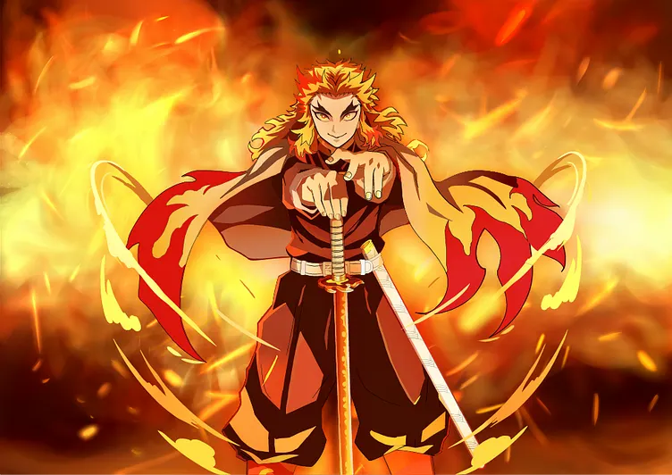
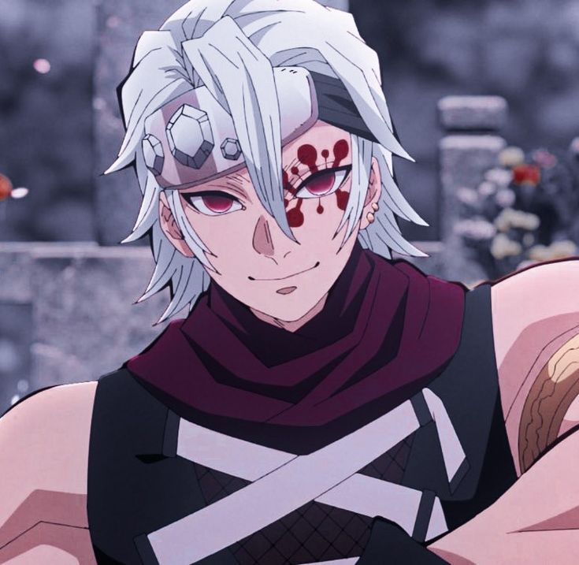
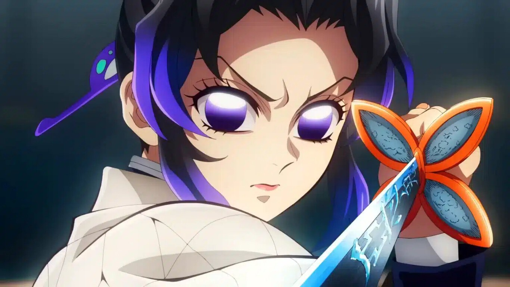

_______________________________________
| - - - KIMETSU NO YAIBA: - - - |
Mejores pilares Bv
_______________________________________
🔥KYOJURO RENGOKU🔥
El pilar de las llamas
"¡¡YO VOY A CUMPLIR CON MIS OBLIGACIONES!!
¡¡NO DEJARÉ QUE NADIE DE LOS QUE ESTÁN AQUÍ MUERA!!"
El anterior pilar de las llamas que poseía una gran fuerza de
voluntad y poder físico, ademas de una personalidad alegre y
amigable.
Era un espadachín que todo el tiempo mostraba mucha alegría.
Además, siempre velaba por los miembros más jóvenes de la
compañía, lo que lo hacía uno de los pilares más apreciados
por los demás espadachines.
Refinaba su cuerpo y mente con incontables entrenamientos, lo
que lo llevó a ser uno de los pilares más poderosos.

Opinion personal:
Rengoku es sin dudas de los personajes mas importantes de
esta historia. A pesar de su corta aparición, se convierte en
un símbolo para los personajes principales e incluso para los
personajes que se están al mismo nivel que el, los pilares,
pero lo siguen respetando de la forma en que se respetaría a
un superior.
- Mi personaje favorito de KNY.
- 10/10 y chad.
_______________________________________
🔊TENGEN UZUI🔊
El pilar del sonido
"¡¡TENEMOS LA PARTITURA!!
¡¡VAMOS A GANAR!!
¡¡YA SÉ CÓMO SUENA TU HORRENDA CANCIÓN!!"
El antiguo pilar del sonido fue criado en un clan de ninjas y
estima lo vistoso y espectacular por encima de todo.
Es un espadachín que anteriormente era un shinobi y tiene una
obsesión por lo vistoso.
Busca lo espectacular en cualquier momento de la vida y se
autodenomina el dios de lo ostentoso.
En el combate, utiliza las habilidades y técnicas que obtuvo
en su entrenamiento ninja para dar caza a los demonios.
Tiene tres esposas que conoció cuando era shinobi y las tres
también están enlistadas en la compañía cazademonios.

Opinion personal:
Uzui es un personaje que con su segunda aparición no me
generó algun interés debido a su comportamiento, sin embargo,
a lo largo de su propio arco se va desentrañando más en su
personalidad, forma de ser y su pasado, lo cual deja al
espectador enganchado a su forma de ser y actuar tan
interesante.
Tiene una batalla increíble contra la sexta luna creciente en
donde logra muchas de las mejores secuencias de la obra y
demuestra el por qué es tan querido por los fans.
- 20/10, simplemente se roba el show cada que aparece.
- No está tan alejado de Rengoku en cuanto a mi favoritismo.
- Increíble diseño en su aspecto, que logra transmitir el
interés del personaje en sobresalir en su propio mundo.
- Su pelea contra la luna seis es hasta el momento mi favorita
de KNY, animación, secuencias y el cómo
hace que te enganches con todos los giros que tiene la pelea.
_______________________________________
🦋SHINOBU KOCHO🦋
El pilar del insecto
"Ojalá que las personas y los demonios aprendieran
a llevarse bien..."
El pilar del insecto de la compañia, que no puede evitar
sonreír al enfrentarse a los demonios.
Es una espadachina que posee amplios conocimientos de farmacia
y un gran talento que le permite fabricar venenos capaces de
derrotar a los demonios.
Antes de entrar en combate con sus despreciables enemigos, les
habla con una dulce sonrisa en el rostro y trata de hacerse su
amiga.

Opinion personal:
Sinceramente la puse como relleno porque ya no hay más pilares
que piense que de verdad sobresalen, tiene momentos chidos
pero no lo suficiente.
Pienso que está sobrevalorada.
- Me gusta su diseño pero su historia no tanto, hay muchas
historias mejores dentro del propio Kimetsu.
- 8/10 y que diga que le fue bien.